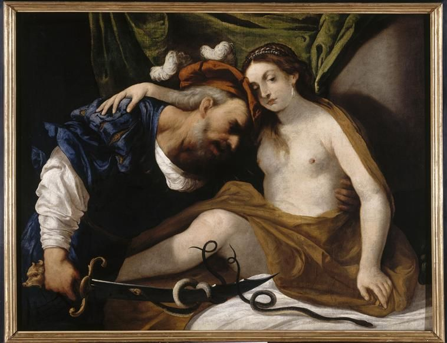
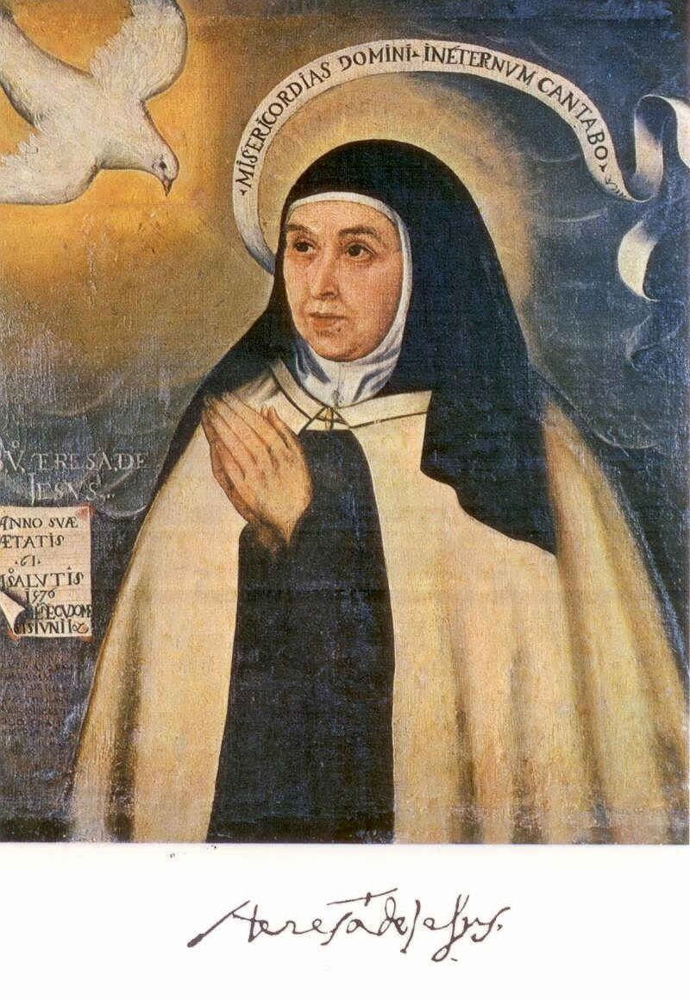

Was will das Weib?
Sigmund Freud, Marie Bonaparte’a; Ernest Jones’un aktarımıyla
I
Ernest Jones, Freud’un biyografisinin ikinci cildinde, Freud’un bir gün Marie Bonaparte’a yaptığı bir itirafı aktarır. Freud, kadın ruhu üzerine otuz yıldır süren araştırmalarına rağmen yanıtlayamadığı büyük sorunun şu olduğunu söylemişti: Kadın ne ister?1 Bu cümle sık sık bir küçümseme, bir erkeğin kadınlara bakışındaki kibrin itirafı olarak alıntılanır. Ama Freud’un yazılarında aynı itiraf başka biçimlerde de tekrar eder ve her seferinde bir kibirden çok bir sınırın kabulü gibi okunur. 1926’da, psikanalizin hekim olmayanlarca uygulanmasını savunduğu kitabında, yetişkin kadının cinsel hayatının psikoloji için İngilizce bir ifadeyle bir dark continent, karanlık bir kıta olduğunu yazar.2 1933’te kadınsılık üzerine verdiği dersin sonunda da dinleyicilerine, bu konuda daha fazlasını öğrenmek istiyorlarsa kendi hayat deneyimlerine başvurmalarını, şairlere dönmelerini ya da bilimin onlara daha derin ve daha tutarlı bilgiler verebileceği zamanı beklemelerini önerir.3
Freud’un bu konudaki dikkatli belirsizliği, daha önceki bir dipnotunda da görülür. 1915’te Cinsellik Kuramı Üzerine Üç Deneme’nin yeni baskısına eklediği bir notta, “eril” ve “dişil” kavramlarının, sıradan insanlara son derece açık görünmelerine rağmen, bilimde karşılaşılan en karışık kavramlar arasında olduğunu yazar ve bu kavramların en az üç farklı anlamda, etkinlik ve edilginlik, biyoloji ve sosyoloji anlamında kullanıldığını ayırt eder.4 Freud’un, Napolyon’un bir sözünü değiştirerek söylediği ünlü cümle, “anatomi yazgıdır”, bu yüzden göründüğünden daha karmaşık bir yerde durur. Anatomi bir yazgıdır; ama bu yazgının nasıl yaşanacağı, öznenin onu hangi fantezilerle, hangi özdeşleşmelerle, hangi arzularla karşılayacağı, anatominin kendisi tarafından belirlenmez.
II
Freud’un bu sorudaki belirsizliği, 1920’lerde ve 1930’ların başında psikanalizin içindeki en sert tartışmalardan birine yol açtı. Freud 1925’te, cinsiyetler arasındaki anatomik farkın psişik sonuçları üzerine yazdığı makalede, küçük kızın gelişimini fallik bir evrenin, anatomik farkın keşfinin ve bunun yarattığı hayal kırıklığının etrafında kurmuştu. Karen Horney, Ernest Jones, Melanie Klein ve Londra çevresindeki başka analistler, bu açıklamanın kadınlığı bir eksiklik olarak tanımladığını, kız çocuğunun kendine özgü, baştan dişil bir gelişimi olabileceğini savundular.5
Freud 1931’de yazdığı kadın cinselliği üzerine makalede bu eleştirilere kısmen yanıt verdi ve kendi kuramını önemli bir noktada değiştirdi. Kız çocuğunun anneye olan ilk bağlılığının, Ödipus kompleksinden önce gelen uzun ve yoğun bir dönemin ne kadar önemli olduğunu ancak şimdi fark ettiğini yazdı. Bu keşfi, arkeolojiden aldığı bir benzetmeyle anlattı: Bu evrenin keşfi, Yunan uygarlığının arkasında daha eski bir Minos-Miken uygarlığının bulunmasına benziyordu.6 Tartışma Freud’un ölümüyle kapanmadı; ama Freud’un kendisinin bu soruyu hiçbir zaman kapatmadığı, onu her yeni yazısında yeniden açtığı açıktır.
Freud’un 1931’de keşfettiği bu erken anne bağlılığı, Lacan’ın kuramında da önemli bir yer tutacaktı. Lacan 1972’de yazdığı “L’étourdit”te, Freud’un Ödipus kompleksi kurgusunun kadını suda bir balık gibi rahat gösterdiğini, oysa kadınların çoğu için anneyle ilişkinin bir yıkım, Fransızca deyişiyle bir ravage olduğunu yazar; kız çocuğu, bir kadın olarak, babasından çok annesinden bir öz, bir töz beklemektedir.7 Bu bekleyiş karşılanamaz, çünkü annenin de kızına verebileceği bir kadınlık özü yoktur. Kadın olmanın ne demek olduğu sorusu, kuşaktan kuşağa, yanıtı olmayan bir talep olarak aktarılır. Klinikte anne ile kız arasındaki ilişkinin bazen ne kadar yakıcı, ne kadar bitmez tükenmez bir hesaplaşmaya dönüşebildiğini bilen herkes, Lacan’ın bu kelimeyi neden seçtiğini anlar.
III
Lacan bu tartışmaya iki aşamada girdi. Birinci aşamada, 1958’de Münih’te Almanca olarak verdiği “Fallusun Anlamı” konuşmasında, fallusu bir organ olarak değil, bir gösteren olarak tanımladı. Fallus, iki cinsin de kendi konumunu onunla ilişkili olarak aldığı bir gösterendir; erkek ona sahip olmayla, kadın ise onu olmayla, yani başkasının arzusunun gösteren nesnesi olmakla tanımlanır. Bu tanım cinsel farkı anatomiden kurtarıyordu, ama hâlâ tek bir gösterenin, fallusun etrafında dönüyordu. Kadın tarafı, bu tanımda da erkeğin tanımının bir tür tersi olarak kalıyordu.
İkinci aşama 1960’ların sonunda başladı ve Lacan’ın bütün öğretisinin belki en çok alıntılanan cümlesiyle ifadesini buldu: Il n’y a pas de rapport sexuel, cinsel ilişki yoktur. Cümle bir kışkırtma olarak duyulur ve öyle tasarlanmıştır; ama söylediği şey, insanların birbiriyle cinsel ilişkiye girmediği değildir. Fransızca rapport, Latince ratio gibi, aynı zamanda bir oranı, matematiksel bir bağıntıyı, bir formülle yazılabilen bir ilişkiyi anlatır. Lacan’ın söylediği, iki cins arasındaki ilişkiyi bir formüle yazmanın imkânsız olduğudur. İki cins, hayvanların içgüdülerinde olduğu gibi, birbirini tamamlayan iki yarım olarak birbirine bağlanmaz. Aralarında bir uyum, bir karşılıklılık, bir oran yoktur. Her biri, karşısındakine başka bir yoldan, kendi fantezisinin, kendi hazzının dolayımıyla ulaşır.
Lacan bu imkânsızlığı, aynı yıllarda kullandığı kipsel kategorilerle de yazar. Zorunlu olan, yazılmaktan hiç durmayandır; olumsal olan, yazılmamaktan durandır; imkânsız olan ise yazılmamaktan hiç durmayandır. Cinsel ilişki bu son kategoriye aittir: Yazılmamaktan hiç durmaz.8 Bu, bir ilişkinin, bir karşılaşmanın, bir aşkın imkânsız olduğu anlamına gelmez. Tam tersine, Lacan’ın kuramında aşk, tam da bu yazılamayanın yerinde, onun yerini tutmak üzere ortaya çıkan şeydir.
IV
Lacan cinsiyetlenme formüllerini 1971 ile 1973 arasında, birkaç seminer boyunca adım adım kurdu; formüllerin bütünlüklü tablosu Encore seminerinin 13 Mart 1973 tarihli dersinde, aynı dönemde yazdığı “L’étourdit” başlıklı uzun metinle birlikte son biçimini aldı.9 Formüller, matematik mantığının niceleyicileriyle yazılmıştır. ∀ “bütün”, ∃ “en az bir tane vardır”, ¬ ise olumsuzlamadır. Φx, Lacan’ın fallik işlev dediği şeydir: öznenin dil tarafından, yani iğdişle, eksiklikle, gösterenin yasasıyla belirlenmesi.
Sol tarafın alt satırı, ∀x Φx, “bütün x’ler fallik işleve tabidir” der. Erkek tarafında yer alan herkes, istisnasız, dilin yasasına, iğdişe, eksikliğe tabidir. Ama bu evrensel önerme, üst satırdaki bir istisnaya dayanır: ∃x ¬Φx, “fallik işleve tabi olmayan en az bir x vardır”. Lacan bu istisnanın modelini Freud’un Totem ve Tabu’sunda bulur. Freud’un kurduğu mitte, ilkel sürünün babası bütün kadınlara sahip olan, hiçbir yasaya tabi olmayan, oğulları tarafından öldürülen ve öldürüldükten sonra yasanın kaynağına dönüşen babadır.10 Erkek tarafının bütünü, bu istisnanın sınırladığı bir küme olarak oluşur. Bir sınır olduğu için bir bütün vardır.
Sağ taraf ise ilk bakışta paradoksal görünür. Üst satır, ¬∃x ¬Φx, “fallik işleve tabi olmayan hiçbir x yoktur” der. Dişil tarafta bir istisna, bir ilkel baba, yasanın dışında duran bir figür yoktur. Ama alt satır, ¬∀x Φx, “bütün x’ler fallik işleve tabi değildir” der. Bu iki önerme birlikte, ilk bakışta çelişkili görünen bir durumu tarif eder: Fallik işlevin dışında kalan hiçbir kadın yoktur, ama hiçbir kadın da bütünüyle fallik işleve tabi değildir. Lacan bu duruma pas-tout, bütün olmayan der.
Encore’daki tablonun bir de alt yarısı vardır ve formüllerin ne anlattığını belki en açık biçimde o gösterir. Tablonun erkek tarafında bölünmüş özne, $, ve fallus, Φ, yer alır; dişil tarafta ise üzeri çizilmiş tanımlığıyla kadın, Öteki’nin eksikliğinin göstereni, S(Ⱥ), ve arzunun nesne-nedeni, a, durur. Lacan bu terimleri oklarla birbirine bağlar. Erkek tarafındaki bölünmüş özneden çıkan ok, karşı taraftaki a’ya gider: Erkek kadına, bir kadın olarak değil, kendi fantezisinin nesnesi üzerinden ulaşır. Karşısındaki kadını değil, onun bedeninde kendi arzusunu harekete geçiren bir ayrıntıyı, bir bakışı, bir sesi, bir parçayı arzular. Dişil taraftaki kadından ise iki ok çıkar. Biri erkek tarafındaki fallusa gider; kadın da fallik işleve, bir erkeğin arzusunun nesnesi olmaya, sahip olmanın ve olmanın oyununa katılır. Öbürü ise kendi tarafındaki S(Ⱥ)’ya, Öteki’nin de eksik olduğunu, dilin bir son sözü, bir garantisi olmadığını söyleyen gösterene yönelir.11 Kadın, bu ikinci ok yüzünden, fallik düzene bütünüyle kapanmaz; dilin sınırına, söylenemeyenin kıyısına açık kalır. İki taraf birbirine bağlanır, ama simetrik oklarla değil. Birbirini tamamlayan iki yarım yerine, birbirini ıskalayan iki yol vardır.
V
Bu “bütün olmayan”ın tuhaflığı, Aristoteles mantığıyla karşılaştırıldığında daha iyi anlaşılır. Aristoteles’in mantık karesinde “bütün x’ler P değildir” önermesi, “bazı x’ler P değildir” anlamına gelir, yani P olmayan en az bir x’in varlığını gerektirir. Lacan’ın bütün olmayanı ise böyle bir varlık iddiası taşımaz. Dişil tarafta P olmayan bir x gösterilemez, ama bütün x’lerin P olduğu da söylenemez. Bütün olmayan, bir kümenin eksik bir parçası değil, kümenin kendisinin kapanamamasıdır.12
Lacan’ın “kadın yoktur” cümlesi buradan gelir. Fransızcada La femme, belirli tanımlıkla, evrensel bir kategori olarak, bütün kadınların ortak özünü anlatan bir kavram olarak kadın demektir. Lacan bu tanımlığın üzerini çizer. Kadınların ortak bir özü, onları bir küme olarak bir araya toplayacak bir istisna yoktur. Kadınlar var, ama kadın, bir bütün olarak, yoktur. Bu cümle de bir kışkırtma olarak duyulur; ama söylediği, kadınlığın bir özle, bir doğayla, bir tanımla belirlenemeyeceğidir. Her kadın kendi tekilliği içinde, bir kümenin üyesi olarak değil, tek tek karşılaşılan biri olarak vardır.
Bu tek tekliğin edebiyattaki en ironik ifadelerinden biri, Mozart’ın Don Giovanni’sindeki katalog aryasıdır. Leporello, efendisinin terk ettiği Donna Elvira’ya, Don Giovanni’nin sevgililerinin uzun listesini okur: İtalya’da şu kadar, Almanya’da bu kadar, İspanya’da ise mille e tre, bin üç.13 Don Giovanni kadınları bir küme olarak değil, bir sayım olarak arzular; her biri listeye bir ad daha ekler, ama liste hiçbir zaman tamamlanmaz. Bin üçüncü kadından sonra da bir sonraki gelecektir.
Lacan’ın cümlesinin Türkçeye çevrilmesi ayrı bir güçlük taşır. Türkçede belirli tanımlık yoktur; “kadın” kelimesi, bağlamına göre hem tek bir kadını, hem kadınları, hem de kadın kavramını anlatabilir. Lacan’ın La femme n’existe pas cümlesini “kadın yoktur” diye çevirdiğimizde, kulağa kadınların var olmadığını söyleyen saçma bir önerme gibi gelir. Daha doğru bir çeviri, belki, “Kadın diye bir şey yoktur” olurdu: Kadınlar vardır, ama onları tek bir özde toplayan, hepsinin adına konuşan bir “kadın” kavramı yoktur. Lacan’ın tanımlığın üzerini çizmesi, Türkçede bir tanımlığın yokluğuyla değil, bir genellemenin, bir kategorinin reddiyle karşılanabilir.
VI
Lacan’ın formüllerinin en önemli sonucu, iki ayrı jouissance biçimini birbirinden ayırmasıdır. Erkek tarafı, fallik jouissance’la, yani dilin, gösterenin, eksikliğin sınırladığı bir hazla tanımlanır. Bu haz bir organa, bir nesneye, bir fanteziye bağlıdır; ölçülebilir, sayılabilir, karşılaştırılabilir. Dişil taraf da fallik jouissance’a erişebilir, çünkü fallik işlevin dışında kalan hiçbir kadın yoktur. Ama bütün olmayan olduğu için, bu tarafta bir başka jouissance’ın, Lacan’ın Öteki’nin jouissance’ı ya da ek jouissance dediği bir hazzın imkânı da vardır.
Lacan bu hazzın tamamlayıcı değil, ek olduğunda ısrar eder. Tamamlayıcı bir jouissance, fallik jouissance’ın eksik kalan parçasını tamamlayacak, iki hazzı bir araya getirerek bir bütün oluşturacaktı; bu da bizi yeniden bütünün mantığına, iki yarımın birbirini tamamladığı bir cinsel ilişki fikrine geri götürecekti. Ek jouissance ise bir bütünü tamamlamaz; bütünün dışında, onun sınırının ötesinde, ona eklenen bir şeydir. Lacan’a göre bu hazzın en belirgin özelliği, onu yaşayanın onu bilmemesidir. Kadın onu yaşar, ama hakkında bir şey söyleyemez.
Bu hazzı anlatmanın yolu, eski bir mitten geçer. Ovidius’un Dönüşümler’inin üçüncü kitabında, Jüpiter ile Juno, nektardan neşelenmiş bir akşam, aşkta hangi cinsin daha büyük bir haz aldığını tartışırlar. Jüpiter kadınların hazzının daha büyük olduğunu söyler, Juno itiraz eder. Tartışmayı çözmek için hem erkek hem kadın olarak yaşamış birine, Teiresias’a başvururlar. Teiresias gençliğinde, ormanda çiftleşen iki yılana sopasıyla vurmuş ve kadına dönüşmüştü; yedi yıl kadın olarak yaşadıktan sonra, sekizinci yıl aynı yılanları yeniden görüp onlara bir kez daha vurmuş ve yeniden erkek olmuştu.14


Teiresias Jüpiter’e hak verir: Kadınların hazzı daha büyüktür. Juno öfkelenir ve hakemin gözlerini sonsuz bir geceye mahkûm eder. Hiçbir tanrı başka bir tanrının yaptığını bozamadığı için, Jüpiter Teiresias’a gözlerinin yerine geleceği bilme yeteneğini verir. Mitin yapısı dikkat çekicidir. Kadının hazzını bilen tek kişi, iki tarafı da yaşamış olan kişidir; ve bu bilgiyi söylediği anda gözlerini yitirir. Kadının hazzı hakkındaki bilgi, onu söyleyenin cezalandırıldığı bir bilgidir. Juno’nun öfkesi, belki de, bu hazzın bir kadın tarafından bile söylenmek istenmediğini, söylendiği anda başka bir şeye dönüştüğünü hatırlatır.
Teiresias’ın Yunan mitolojisindeki öbür büyük sahnesi bu okumaya bir derinlik daha ekler. Sophokles’in Kral Oidipus’unda, Thebai’yi kasıp kavuran vebanın nedenini arayan Oidipus’un çağırdığı kör kâhin de odur. Teiresias önce konuşmak istemez, sonra Oidipus’a aradığı katilin kendisi olduğunu söyler. Psikanalizin iki kurucu sorusu, babanın öldürülmesi ile annenin arzulanması sorusu ve kadının hazzı sorusu, böylece aynı kör figürde buluşur. İki soruyu da bilen, gözlerini yitirmiş biridir; bilgisi bir görmeye değil, görmenin yitirilmesine dayanır. Yirminci yüzyılda T. S. Eliot Çorak Ülke’de bu figürü yeniden çağırır ve ona kendi ağzından konuşturur: “I Tiresias, though blind, throbbing between two lives, / Old man with wrinkled female breasts”.15 İki hayat arasında çarpan kör bir yaşlı adam, kırışık kadın göğüsleriyle: Cinsel farkın iki tarafını da yaşamış ve bu yüzden ikisinden hiçbirine bütünüyle ait olmayan bir tanık.
VII
Lacan bu hazzın tanıklarını mistiklerde arar. Encore’un 20 Şubat 1973 tarihli dersinde dinleyicilerine, Roma’ya gidip Bernini’nin Aziz Teresa heykeline bakmalarını önerir; o zaman Teresa’nın bir haz yaşadığını hemen anlayacaklarını söyler. Ama neden haz aldığı sorusu açık kalır. Lacan’a göre mistiklerin temel tanıklığı, tam da bunu yaşadıklarını ama onun hakkında hiçbir şey bilmediklerini söylemeleridir.16


Bernini’nin heykeli, Teresa’nın kendi yaşam öyküsünde anlattığı bir sahneyi canlandırır. Teresa, kitabının yirmi dokuzuncu bölümünde, yanında beliren küçük, güzel bir meleğin elinde ucunda biraz ateş bulunan altın bir mızrak gördüğünü, meleğin bu mızrağı birkaç kez kalbine, iç organlarına kadar sapladığını, onu çıkardığında kendisini Tanrı’nın büyük aşkıyla yanmış hâlde bıraktığını anlatır. Acı öyle büyüktür ki onu inletir; ama bu acının verdiği tatlılık da öyle aşırıdır ki acının dinmesini istemez.17 Acı ile hazzın, bedenin yanması ile Tanrı’nın aşkının, söylenebilen ile söylenemeyenin birbirine geçtiği bu anlatı, Lacan’ın ek jouissance’ı için düşünebildiği en iyi örnektir: bir haz, ama fallik işlevin, bir organın, bir nesnenin sınırladığı bir haz değil; bir tanıklık, ama ne olduğunu bilmeyen bir tanıklık.
Lacan bu hazzın yalnızca kadınlara ait olmadığını da söyler. Formüllerin iki tarafı anatomiye göre ayrılmaz; bir erkek de bütün olmayanın tarafına geçebilir. Lacan’ın verdiği örnek, Teresa’nın çağdaşı ve onun reform hareketinin yol arkadaşı olan Haçlı Yuhanna’dır, İspanyolca adıyla San Juan de la Cruz. Ruhun Karanlık Gecesi’nin şairi, Lacan’ın gözünde, bir erkek olarak dişil tarafta duran, o tarafın hazzını yaşayan bir mistiktir. Bu küçük ayrıntı, formüllerin bir biyoloji değil, bir mantık olduğunu açıkça gösterir. “Erkek tarafı” ve “dişil taraf” adları, Lacan’ın elindeki dilin, yani tarihin ve kültürün ona bıraktığı kelimelerin izini taşır; ama tarif ettikleri şey bedenlerin değil, öznelerin dil ve hazla kurdukları ilişkinin iki farklı mantığıdır. Bir bedenin anatomisi, öznenin bu iki mantıktan hangisinde yaşayacağını önceden belirlemez.
VIII
Cinsel ilişki yoksa, iki cins birbirine nasıl ulaşır? Lacan’ın yanıtı, aşktır. Encore’da, cinsel ilişkinin yerini tutan şeyin tam olarak aşk olduğunu söyler. Aşk, yazılamayanın yerine gelen, iki öznenin birbirine kendi fantezileri ve kendi hazları üzerinden ulaşamadığı yerde, bir köprü kurmaya çalışan şeydir. Lacan’ın çok daha önce, 1960–1961’deki aktarım seminerinde söylediği bir cümle bu düşüncenin ilk biçimidir: Sevmek, sahip olmadığın şeyi vermektir.18 Sevgili, kendi eksikliğini verir; bir şeyi değil, bir şeyin yokluğunu.
Lacan’ın kipsel kategorileri burada yeniden işe yarar. Bir aşk karşılaşması olumsaldır: İki insan, hiçbir zorunluluk olmadan, bir rastlantıyla karşılaşır ve bir an için, yazılamayan bir şeyin yazılmaya başladığı izlenimi doğar. Olumsal olanın tanımı buydu: yazılmamaktan duran. Aşkın kendi içindeki eğilimi ise bu olumsallığı bir zorunluluğa çevirmektir: Karşılaşmanın kaçınılmaz olduğuna, iki kişinin birbiri için yaratıldığına, bu ilişkinin hiç durmadan yazılmaya devam edeceğine inanmak. Lacan’a göre aşkın dramı, bu geçişte, olumsalın zorunluya dönüştürülmek istendiği yerde oynanır. Aşk, imkânsız olanın bir anlığına mümkün gibi görünmesidir ve bu görünümün kalıcı olmasını ister.
Seminerin başlığı da bu düşünceye bağlanır. Fransızca encore, “daha”, “yine”, “bir kez daha” demektir; bir sevgilinin, bir çocuğun, bir hazzın sonsuz talebini, bir türlü yetmeyenin çağrısını anlatır. Aynı kelime, Fransızcada aynı sesle, en corps, “bedende” olarak da duyulur. Lacan’ın seminerinin bütün düşüncesi bu iki okuma arasında gidip gelir: Konuşan varlık bedeninde bir haz yaşar, ama bu haz hiçbir zaman yetmez; hep daha fazlasını, bir kez daha ister. Bu bitmez talebe bir yanıt vermek, ne fallik jouissance’ın ne de ek jouissance’ın işidir. Aşk ise, bu talebe bir yanıt vermeye değil, onu başka bir öznenin eksikliğine yöneltmeye çalışır. Bu yüzden aşk bir cesaret işidir: İki eksik varlığın birbirine kendi eksiklikleri üzerinden yaklaşması, bir tamamlanma vaadi taşımadan karşılaşmaya razı olması kolay değildir. Aşkta özne, karşısındakinde kendini tamamlayacak şeyi bulamayacağını bilerek yine de ona yönelir.
IX
Cinsiyetlenme formülleri, yayımlandıkları günden beri hem büyük bir hayranlığın hem de sert eleştirilerin konusu oldu. En erken ve en sert eleştiri, Lacan’ın kendi çevresinden geldi. Luce Irigaray, 1974’te yayımladığı Speculum de l’autre femme’de, Freud’dan Platon’a uzanan Batı düşüncesinin kadını hep erkeğin bir aynası, bir eksik versiyonu olarak düşündüğünü ileri sürdü; kitabın yayımlanmasının ardından Vincennes’deki psikanaliz bölümündeki görevinden uzaklaştırıldı. Birkaç yıl sonra Ce sexe qui n’en est pas un’de, doğrudan Encore’u ele aldığı bir yazıda, Lacan’ın kadınların hazzı hakkında, kadınlara söz vermeden, onların adına konuştuğunu yazdı.19
Formüllerin İngilizce konuşan dünyaya girişi ise Juliet Mitchell ile Jacqueline Rose’un 1982’de yayımladığı Feminine Sexuality derlemesiyle oldu. Mitchell ve Rose, Lacan’ın kuramını, kadınlığı bir doğa olarak değil, bir yapı olarak, dilin içinde kurulan bir konum olarak düşünmenin bir aracı olarak savundular. Joan Copjec 1994’te, formüllerin Kant’ın antinomileriyle yapısal bir akrabalık taşıdığını gösterdi: Erkek tarafı Kant’ın dinamik antinomilerine, dişil taraf ise matematiksel antinomilerine karşılık gelir.20 Judith Butler ise 1990’da yayımladığı Gender Trouble’da, Lacan’ın Sembolik düzeninin cinsel farkı tarih dışı bir yasa olarak sabitlediğini, toplumsal cinsiyetin tekrarlanan edimlerle kurulan, değiştirilebilir bir yapı olduğunu göremediğini öne sürdü.
Bu tartışma bugün de sürüyor ve bu denemenin onu çözme iddiası yok. Ama formüllerin klinik açıdan önemli bir yanı, hem savunucularının hem de eleştirmenlerinin dikkatinden kaçabilir. Formüller öznelerin hangi tarafta yer alması gerektiğini söylemez; bir norm, bir hedef, bir doğru cinsiyetlenme tarif etmez. Lacan 1974’te, cinsiyetlenmiş varlığın yetkisini yalnızca kendisinden, ve birkaç başkasından, aldığını söyleyecekti.21 Bir özne, anatomisi ne olursa olsun, kendini erkek tarafında, dişil tarafta, ya da bu iki taraf arasında, kendi tarihinin, kendi arzusunun ve kendi hazzının izin verdiği bir yerde bulur.
Bu, cinsiyet kimliği farklı biçimlerde yaşanan insanlarla çalışan bir analist için önemli bir ilkedir. Analiz, bir kişiye hangi cinsiyette olması gerektiğini söylemez, onu bir normun içine geri çağırmaz. Analistin işi, öznenin kendi cinsiyetlenme biçimini, onun içinde yaşadığı acıyı, hazzı ve soruyu dinlemektir. Freud’un hayatının sonuna kadar söylediği şey, bu dinlemenin ilkesidir: Burada bilen biz değiliz. Bilmek isteyen, şairlere, kendi deneyimine ya da, analizin içinde, karşısındaki öznenin kendi sözüne dönmelidir.
Notlar
- E. Jones, The Life and Work of Sigmund Freud, cilt 2, London: Hogarth Press, 1955. Jones’un aktardığı İngilizce cümlede Freud, yanıtlanmamış büyük sorunun, otuz yıllık araştırmasına rağmen kendisinin de yanıtlayamadığı sorunun “Kadın ne ister?” olduğunu söyler. Almanca Was will das Weib? biçimi bu aktarımdan yaygınlaşmıştır. ↩︎
- S. Freud, Die Frage der Laienanalyse (1926), Gesammelte Werke, XIV. Freud ifadeyi Almanca metnin içinde İngilizce bırakır; bu seçim, ifadenin on dokuzuncu yüzyıl İngiliz kâşiflerinin Afrika için kullandığı bir deyimden alındığını açıkça gösterir. ↩︎
- S. Freud, “Die Weiblichkeit”, Neue Folge der Vorlesungen zur Einführung in die Psychoanalyse (1933), 33. ders, Gesammelte Werke, XV. Freud aynı derste, anlattıklarının yalnızca kadının cinsel işlevle belirlendiği ölçüde geçerli olduğunu, bu belirlenimin de çok büyük olmakla birlikte bir kadının bütününü kapsamadığını ekler. ↩︎
- S. Freud, Drei Abhandlungen zur Sexualtheorie (1905), 1915 baskısına eklenen not, Gesammelte Werke, V. Freud aynı notta, ne psikolojik ne de biyolojik anlamda saf bir erilliğin ya da dişilliğin bulunduğunu, her bireyin iki cinsin özelliklerinin bir karışımını taşıdığını vurgular. ↩︎
- K. Horney, “Flucht aus der Weiblichkeit”, Internationale Zeitschrift für Psychoanalyse, 12 (1926); E. Jones, “The Early Development of Female Sexuality”, International Journal of Psycho-Analysis, 8 (1927). Horney, Freud’un kız çocuğu tarifinin, küçük bir erkek çocuğun kız çocuğu hakkındaki düşüncelerine şaşırtıcı biçimde benzediğini ileri sürmüştü. ↩︎
- S. Freud, “Über die weibliche Sexualität” (1931), Gesammelte Werke, XIV. Freud aynı yerde, bu erken dönemin analizde kavranmasının kendisine çok zor geldiğini, belki de aktarımda bir erkek analist olarak bu bağlılığın yerine geçmesinin güç olduğunu ekler; kadın analistlerin, Jeanne Lampl-de Groot ve Helene Deutsch’un bu konuda daha ileri gittiklerini kabul eder. ↩︎
- J. Lacan, “L’étourdit” (1972), Autres écrits, Paris: Seuil, 2001. Fransızca ravage, bir fırtınanın, bir savaşın arkasında bıraktığı yıkımı anlatır. Lacancı klinikte kavram, anne ile kız arasındaki ilişkinin bazen sınırsız bir talebe, bitmeyen bir hesaplaşmaya dönüşmesini adlandırmak için kullanılır. ↩︎
- J. Lacan, Le Séminaire, Livre XX: Encore (1972–1973), yay. haz. J.-A. Miller, Paris: Seuil, 1975. Lacan’ın Fransızca formülleri şöyledir: zorunlu, ce qui ne cesse pas de s’écrire; olumsal, ce qui cesse de ne pas s’écrire; imkânsız, ce qui ne cesse pas de ne pas s’écrire. ↩︎
- J. Lacan, “L’étourdit” (1972), Scilicet, 4 (1973); Autres écrits, Paris: Seuil, 2001. Formüllerin ilk taslakları D’un discours qui ne serait pas du semblant (1971) ve ...ou pire (1971–1972) seminerlerinde görülür. ↩︎
- S. Freud, Totem und Tabu (1913), Gesammelte Werke, IX. Lacan’ın okumasında ilkel baba bir tarihsel olgu değil, mantıksal bir zorunluluktur: Erkek tarafının evrenselliği, ona dahil olmayan bir istisnanın varsayılmasıyla kurulur. ↩︎
- Lacan, Encore, 13 Mart 1973 tarihli ders. S(Ⱥ), Lacan’ın 1960’tan beri kullandığı bir yazıdır: Öteki’nin, dilin ve yasanın yerinin, kendisinin de eksik olduğunu, hiçbir son gösterenin anlamı kapatamadığını gösteren gösteren. ↩︎
- Lacan’ın pas-tout’u Aristoteles’in tikel önermesinden ayırma biçiminin mantıksal tutarlılığı üzerine ayrıntılı bir inceleme için bkz. G. Le Gaufey, Le pastout de Lacan: consistance logique, conséquences cliniques, Paris: EPEL, 2006. ↩︎
- W. A. Mozart ve L. Da Ponte, Don Giovanni (1787), I. perde, Leporello’nun aryası “Madamina, il catalogo è questo”. Arya, kadınların yaşlarını, bedenlerini, toplumsal sınıflarını da ayrıntılı biçimde sayar ve sayımın hiçbir zaman bir bütüne varmadığını, her yeni adla yeniden başladığını duyurur. ↩︎
- Ovidius, Metamorphoses, III, 316–338. Hesiodos’a atfedilen kayıp Melampodia’dan aktarılan ve Apollodoros’un Kütüphane’sinde (III, 6, 7) yer alan bir başka anlatımda Teiresias daha da kesin konuşur: Aşkın hazzı on parçaya bölünse, erkeğe bir, kadına dokuz parça düşer. ↩︎
- T. S. Eliot, The Waste Land (1922), III, “The Fire Sermon”. Eliot şiire eklediği notlarda Teiresias’ın şiirin bir karakteri değil, yalnızca bir seyircisi olduğunu, ama bütün öbür figürleri kendinde birleştiren en önemli kişi olduğunu yazar ve Ovidius’un anlatısından uzun bir parçayı Latince olarak aktarır. ↩︎
- Lacan, Encore, 20 Şubat 1973 tarihli ders. Lacan aynı derste mistiklerin coşkulu sözlerinin boş laf olmadığını, okunabilecek en iyi şeyler arasında olduğunu söyler ve araya, sayfanın altına düşülmüş bir not gibi, kendi Écrits’sini de aynı düzene ait metinler arasına ekler. ↩︎
- Teresa de Jesús, Libro de la vida (y. 1565), 29. bölüm. Bu sahne Katolik gelenekte “transverberatio”, kalbin delinmesi adıyla bilinir. Teresa 1622’de aziz ilan edildi; Bernini heykeli, bu kanonizasyondan yaklaşık çeyrek yüzyıl sonra, Kardinal Federico Cornaro için yaptı. ↩︎
- J. Lacan, Le Séminaire, Livre VIII: Le transfert (1960–1961), Paris: Seuil, 1991. Lacan bu formülü Platon’un Şölen’inin uzun bir okuması içinde kurar; sevilen, sevenin arzusunu harekete geçiren ama kendisinde ne olduğunu bilmeyen kişidir. ↩︎
- L. Irigaray, Speculum de l’autre femme, Paris: Minuit, 1974; Ce sexe qui n’en est pas un, Paris: Minuit, 1977. İkinci kitaptaki “Così fan tutti” başlıklı yazı, Encore’un doğrudan bir eleştirisidir; başlık Mozart’ın operasına, “Bütün kadınlar böyle yapar”a gönderme yapar. ↩︎
- J. Copjec, “Sex and the Euthanasia of Reason”, Read My Desire: Lacan against the Historicists, Cambridge, MA: MIT Press, 1994. Copjec’e göre cinsel fark, toplumsal inşanın bir ürünü olarak da biyolojik bir veri olarak da açıklanamaz; aklın kendi sınırına çarptığı iki farklı başarısızlık biçimidir. ↩︎
- J. Lacan, Le Séminaire, Livre XXI: Les non-dupes errent (1973–1974), 9 Nisan 1974 tarihli ders. Cümle, Lacan’ın analistin yetkisi üzerine daha önce söylediği, analistin yetkisini yalnızca kendisinden aldığı cümlesinin bir yankısıdır. ↩︎
Kaynakça
- Butler, J. (1990). Gender Trouble: Feminism and the Subversion of Identity. New York: Routledge.
- Copjec, J. (1994). Read My Desire: Lacan against the Historicists. Cambridge, MA: MIT Press.
- Freud, S. (1905/1915). Drei Abhandlungen zur Sexualtheorie. Gesammelte Werke, V.
- Freud, S. (1913). Totem und Tabu. Gesammelte Werke, IX.
- Freud, S. (1926). Die Frage der Laienanalyse. Gesammelte Werke, XIV.
- Freud, S. (1931). Über die weibliche Sexualität. Gesammelte Werke, XIV.
- Freud, S. (1933). Die Weiblichkeit. Neue Folge der Vorlesungen zur Einführung in die Psychoanalyse. Gesammelte Werke, XV.
- Horney, K. (1926). Flucht aus der Weiblichkeit. Internationale Zeitschrift für Psychoanalyse, 12.
- Irigaray, L. (1974). Speculum de l’autre femme. Paris: Minuit.
- Irigaray, L. (1977). Ce sexe qui n’en est pas un. Paris: Minuit.
- Jones, E. (1955). The Life and Work of Sigmund Freud, cilt 2. London: Hogarth Press.
- Lacan, J. (1966). La signification du phallus (1958). Écrits içinde. Paris: Seuil.
- Lacan, J. (1973). L’étourdit. Scilicet, 4.
- Lacan, J. (1975). Le Séminaire, Livre XX: Encore (1972–1973). Paris: Seuil.
- Le Gaufey, G. (2006). Le pastout de Lacan: consistance logique, conséquences cliniques. Paris: EPEL.
- Mitchell, J. ve Rose, J. (yay. haz.) (1982). Feminine Sexuality: Jacques Lacan and the école freudienne. London: Macmillan.
- Ovidius. Metamorphoses, III.
- Teresa de Jesús (y. 1565). Libro de la vida.